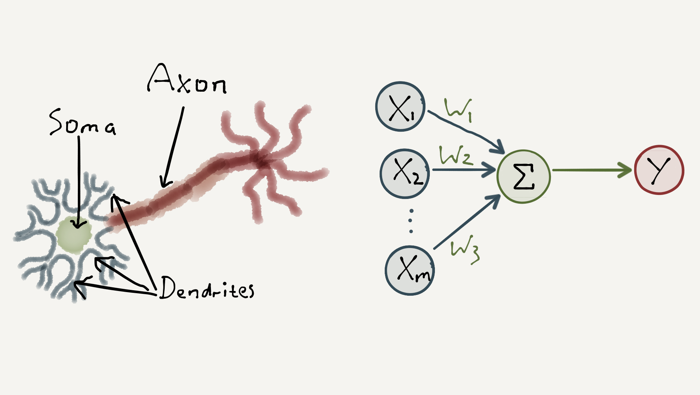
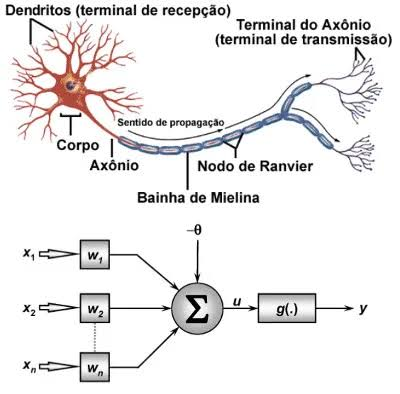
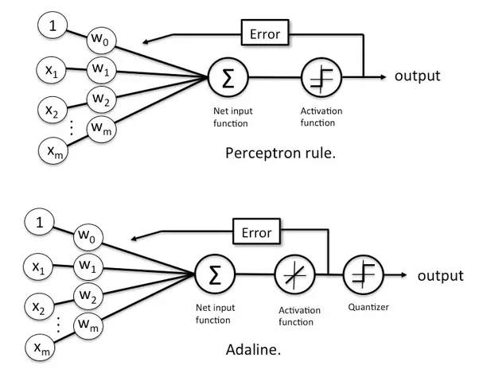
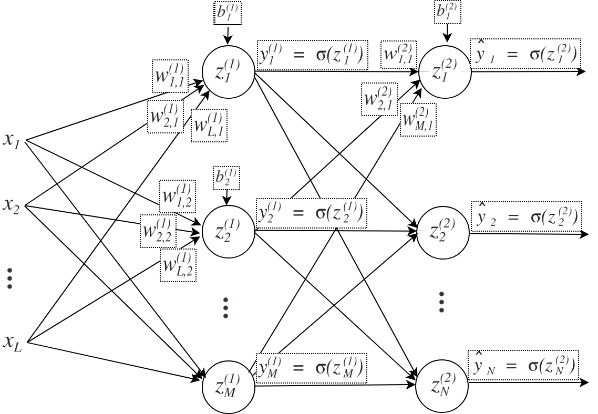
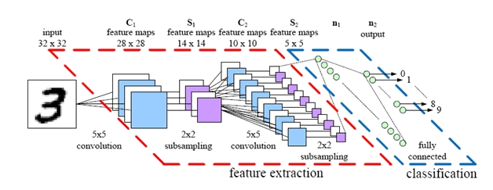
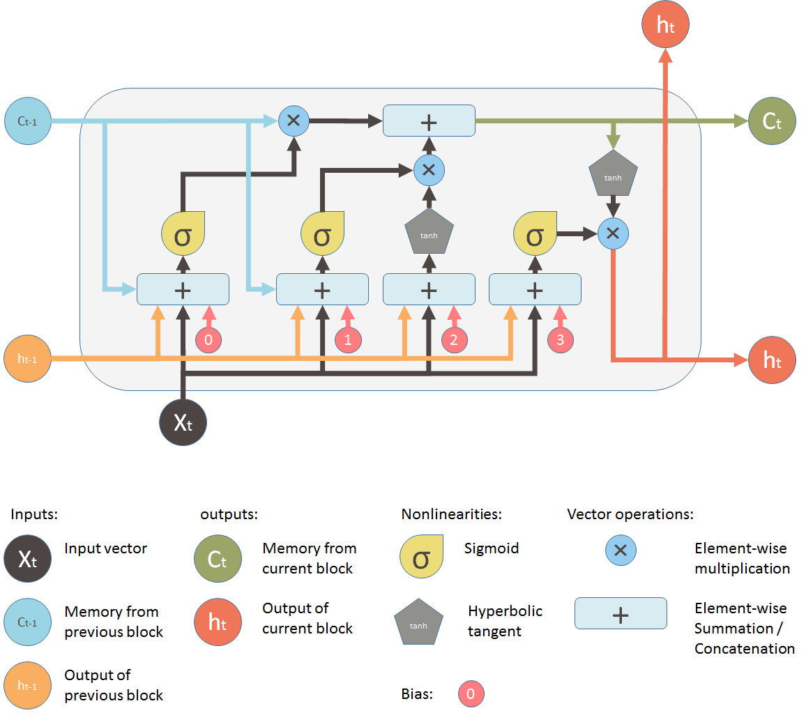

CAPÍTULO 00 · REDES NEURAIS
Antes de treinar uma rede, vamos entender do que ela é feita.
Neurônios artificiais recebem dados, aplicam operações matemáticas e, quando organizados em arquiteturas diferentes, resolvem problemas diferentes.
Começar pelo neurônio ↓ENTRADAOCULTASAÍDA
Dados atravessam camadas e se transformam em uma previsão.
ANTES DE COMEÇAR
O que são redes neurais e para que elas servem?
Redes neurais são modelos computacionais capazes de aprender relações entre exemplos de entrada e respostas esperadas. Em vez de receber todas as regras escritas manualmente, a rede ajusta seus próprios parâmetros — pesos e bias — para reconhecer padrões presentes nos dados.
Elas são especialmente úteis quando a relação entre os dados e a resposta é complexa demais para ser descrita por poucas regras. Uma rede pode aprender a distinguir objetos em imagens, interpretar partes de um texto, reconhecer padrões em áudio, detectar comportamentos incomuns ou estimar valores futuros.
01 · A UNIDADE BÁSICA
O neurônio artificial
Ele não “pensa”: calcula. Entradas são combinadas por pesos e bias; uma função de ativação transforma esse resultado em uma saída.
Entradainformação fornecida ao modelo
Pesoinfluência de cada entrada
Biasdeslocamento da decisão
Somacombinação linear dos sinais
Ativaçãotransformação aplicada ao resultado
02 · INSPIRAÇÃO, NÃO CÓPIA
Neurônio biológico × neurônio artificial
Redes artificiais foram inspiradas na ideia de células conectadas, mas são uma simplificação matemática extrema — não uma simulação fiel do cérebro.

NEURÔNIO BIOLÓGICO↓inspiração↓NEURÔNIO ARTIFICIAL
O paralelo útil é “receber → combinar → transmitir”. A semelhança termina aí: o neurônio artificial é uma equação com parâmetros ajustáveis.

03 · DE UNIDADE A REDE
Um neurônio sozinho não é uma rede.
1 neurônio
→vários neurônios
→camadas
→rede neuralCamada de entrada
Recebe os dados do problema.
Camadas ocultas
Transformam as representações por meio de pesos e ativações.
Camada de saída
Produz a previsão: classe, número, texto ou outra representação.
04 · O QUE UMA REDE FAZ?
Transforma dados em padrões úteis.
Durante o treinamento, os parâmetros são ajustados para que a rede produza saídas cada vez mais adequadas.
▦Imagempixels
→≋Textotokens
→⌁Áudiosinal
→123Númerosmedidas
→rede neuraltransformações→previsão
05 · TREINAMENTO
Treinar é ajustar parâmetros para melhorar previsões.
Os dados passam pela rede, que produz uma previsão. Comparamos essa previsão ao resultado esperado, medimos uma perda e ajustamos pesos e bias. O ciclo se repete muitas vezes.
- Dados
- Rede
- Previsão
- Comparação
- Erro / perda
- Ajuste
- Nova tentativa
Vocabulário: a função de perda mede o desvio; a otimização busca reduzi-lo; o gradiente descendente define a direção de ajuste; e o backpropagation distribui essa informação pelas camadas. As derivadas ficam para os próximos capítulos.
06 · ATIVAÇÕES
Uma mesma soma pode gerar comportamentos diferentes.
Escolha uma função para visualizar sua transformação. Em redes multicamadas, ativações não lineares tornam possível representar relações complexas.
07 · UMA DISTINÇÃO ESSENCIAL
Arquitetura não é função de ativação.
REDE NEURALARQUITETURA ATIVAÇÃO
Como os neurônios são organizados e conectados.
Perceptron · MLP · CNN · RNN · TransformerComo cada neurônio transforma sua soma.
Step · Linear · Sigmoid · Tanh · ReLU08 · DIFERENTES REDES, DIFERENTES PADRÕES
Por que existem tantas arquiteturas?
As conexões e operações são organizadas de formas diferentes para lidar melhor com estruturas presentes nos dados. Os exemplos abaixo são usos comuns, não limites rígidos.
Classificação linear. Será estudado em profundidade no próximo capítulo.
Neurônio adaptativo associado à Regra Delta/LMS.
Camadas densas para relações não lineares, classificação e regressão.
Estruturas espaciais: imagens, objetos e segmentação.
Dados ordenados, como texto, sinais e séries temporais.
Representação, reconstrução e detecção de anomalias.
Dois modelos em competição para geração de dados.
Atenção entre elementos de uma sequência; base de LLMs e IA generativa moderna.
Perceptron / ADALINE
Decisões simples a partir de poucos indicadores: aprovar ou não uma solicitação, detectar um limiar em um sensor, estimar uma medida linear.
MLP
Prever preço de imóvel, risco de inadimplência ou probabilidade de cancelamento a partir de tabelas de dados.
CNN
Reconhecer gatos em fotos, localizar objetos, inspecionar defeitos em peças e segmentar regiões em exames de imagem.
RNN / LSTM
Prever demanda ao longo do tempo, analisar uma sequência de sinais ou processar texto palavra por palavra.
Autoencoder
Comprimir representações, reconstruir sinais e destacar anomalias quando a reconstrução fica muito diferente do esperado.
GAN
Gerar imagens sintéticas, criar variações de um conjunto visual ou auxiliar na criação de dados artificiais.
Transformer
Traduzir, resumir, responder perguntas, gerar texto e relacionar partes distantes de texto, imagem, áudio ou código.
| Modelo | Estrutura | Uso principal |
|---|---|---|
| Perceptron | Neurônio simples | Classificação linear |
| Adaline | Neurônio linear adaptativo | Aprendizado linear |
| MLP | Camadas densas | Classificação / regressão |
| CNN | Convoluções | Imagens |
| RNN / LSTM | Conexões recorrentes | Sequências |
| Autoencoder / GAN | Codificação / competição | Representação / geração |
| Transformer | Atenção | Linguagem e multimodalidade |
DIAGRAMAS DO REPOSITÓRIO
Veja como as conexões mudam de um modelo para outro.




.png)
09 · UMA VISÃO GERAL
Neurônio artificial → Perceptron → ADALINE → MLP → CNN / RNN / LSTM → Autoencoders / GANs → Transformers → LLMs e IA generativa
10 · DEEP LEARNING
Inteligência Artificial → Machine Learning → Redes Neurais → Deep Learning
Deep Learning usa redes com múltiplas camadas e arquiteturas capazes de aprender representações hierárquicas complexas. Agora você conhece o vocabulário para começar pelo primeiro modelo: o Perceptron.
Próximo capítulo: Perceptron →